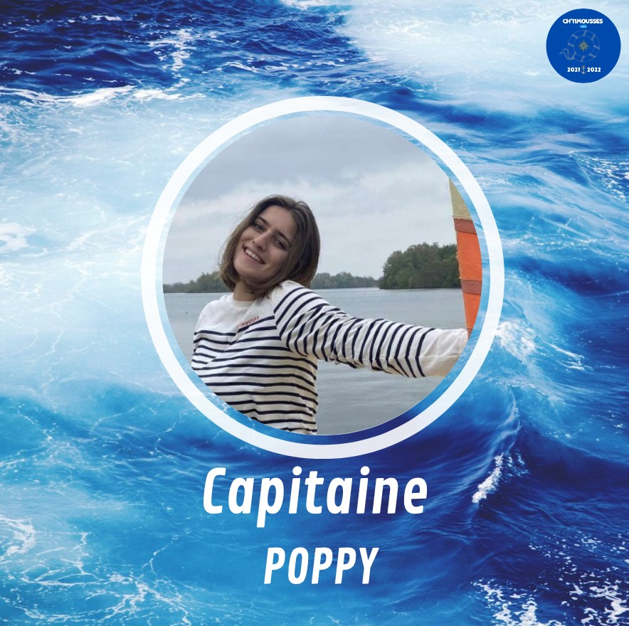
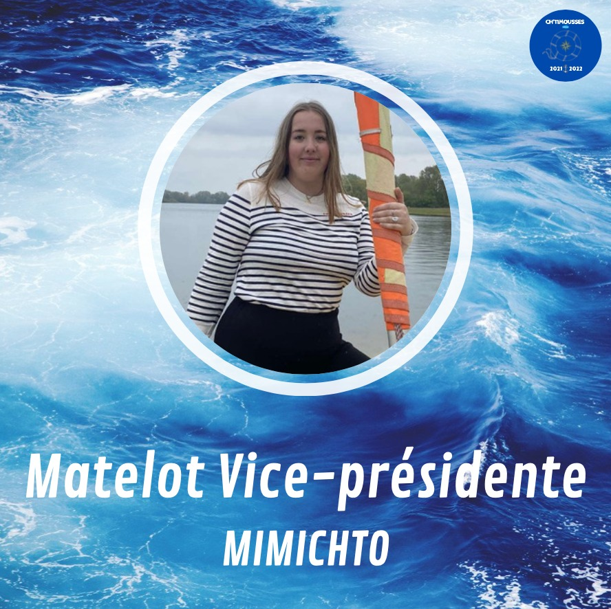
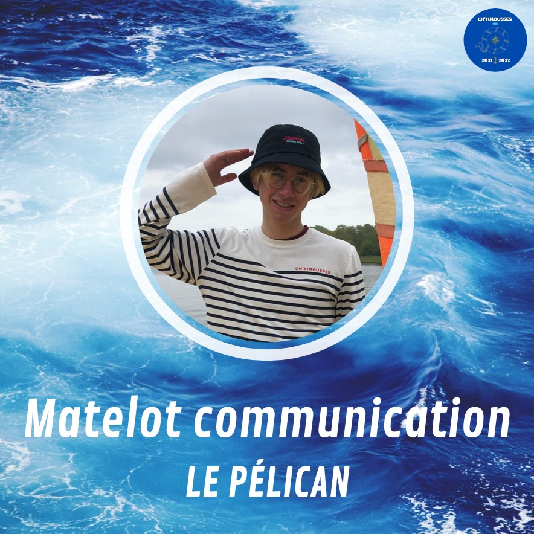
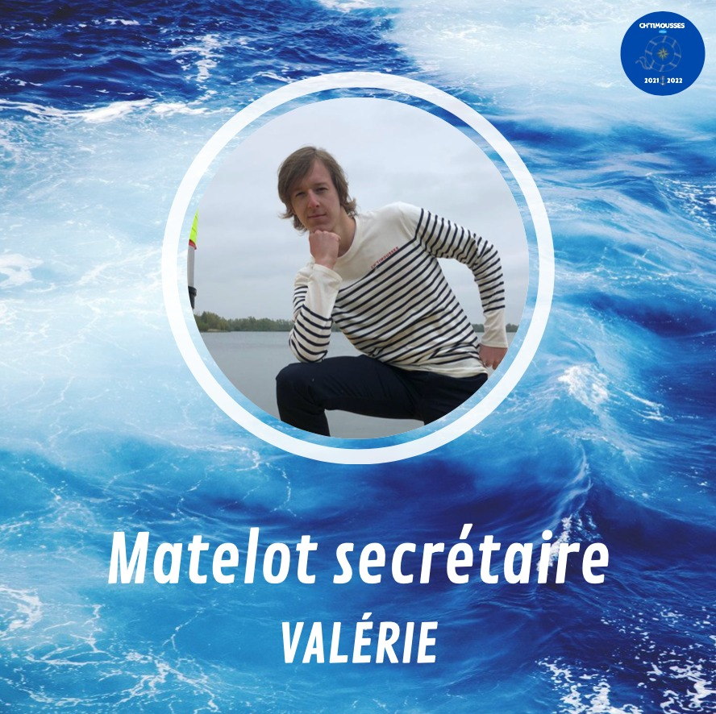
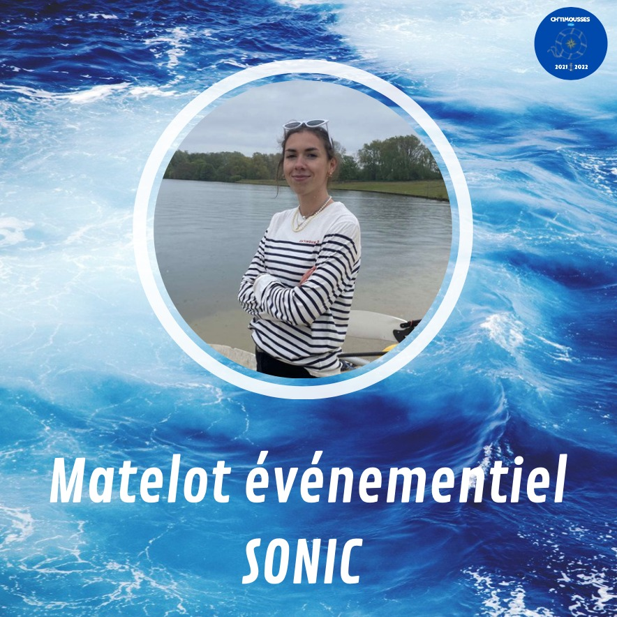
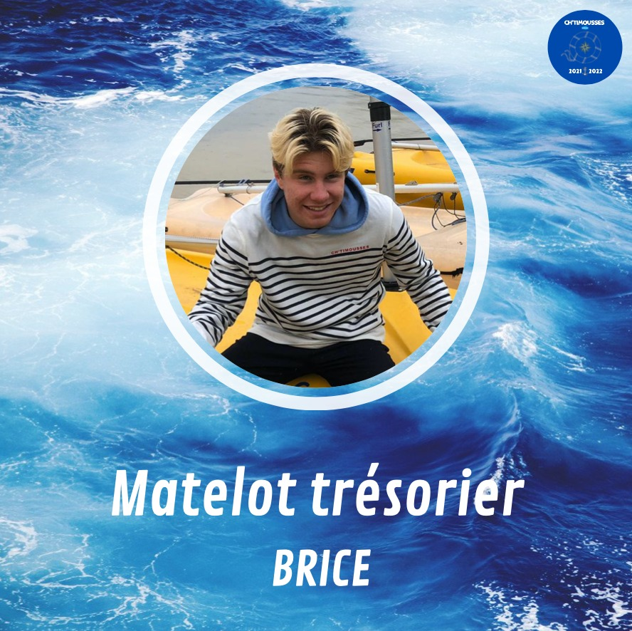

Présentation de nos Ch'timousses
✨Le matelot en chef, notre cher capitaine, Pauline alias Poppy✨ Comment vous décrire Pauline ?? Elle a 18 ans, un coeur à prendre et un sens de l’humour un peu décalé... Avec Pauline en capitaine vous êtes sûr de ne pas vous ennuyer, notre chef scout saura mener à bien la barque. ⛵️Elle est toujours partante pour faire la fête et des blagues à tout le monde !! Son côté picard saura vous charmer surtout quand il apparaît dans son accent ! Avec elle, pas de place à l’ennui !!! 💪🏼
✨Milena alias Mimi’chto est le bras droit de notre capitaine, notre matelot Vice-présidente !✨ C’est la doyenne du groupe, âgée de 21 ans, vous pourrez compter sur elle pour vous aider ! ✋🏼 Grande fan de la fête comme le reste de l’équipage, la seule vraie lilloise du groupe saura vous emmener dans les bonnes adresses pour vous amuser. Vous ne la verrez jamais sans son humour, parfois un peu lourd !🤪
✨ Hugo matelot communication ✨ Parmi nos matelots, nous retrouvons Hugo ou comme on l’aime l’appeler Le Pelican ! Il est âgé de 18 ans et il est célibataire les filles !!! Originaire d' Hazebrouck, le petit Hugo à une passion pour le skateboard et pour la mode. Vous pourrez toujours compter sur lui pour faire la fête et pour skater dans les rues de Lille ! 🤙🏼 Il vous épatera tout au long de l’année avec ses coiffures toutes aussi moches les unes que les autres et avec un peu de chance vous pourrez l’entendre
✨Notre secrétaire est nul d’autre que notre matelot Cyprien AKA Valérie !✨ Il est âgé de 18 ans lui aussi. Si vous cherchez Cyprien, regardez Hugo il n’est jamais sans lui, ce sont Tic&Tac. 🖇 Toujours souriant, il vous changera les idées comme personne après une mauvaise journée ! Mis à part ça, tout comme les autres ch’timousses, Cyprien ne dira jamais non à une soirée entre potes ! Si vous avez des contacts avec Carhartt n’hésitez pas, son plus grand rêve est de se faire sponsoriser !🤩
✨Marine ou alors Sonic est notre matelot événementiel✨ Que ce soit la fête, le sport, les magasins ou encore des balades en mer, Marine à plus d’un tour dans son sac pour vous faire passer une année de folie.🎉 Elle est âgée de 19 ans, tout comme notre capitaine, son coeur est à prendre. C’est surement la plus grande sportive de ce BDE (voire la seule), si vous aimez le surf et les vieilles musiques, vous pouvez la demander en mariage, ce sera un oui assuré ! Si vous avez de la chance, vous découvrirez pourquoi on la surnomme Sonic !🤞🏼
✨ Théo alias Brice, est le responsable de la fortune du navire ! ✨ On l’appelle le matelot trésorier ! À seulement 18 ans, c’est un des plus grands fêtards de la bande ! Picard tout comme notre capitaine, Théo est un grand fan lui aussi de surf, il glisse sur la vague comme Brice de Nice et tout comme lui, séduit toutes les surfeuses sur son passage ! Une réclamation à faire, ce n’est pas à lui qu’il faut s’adresser !